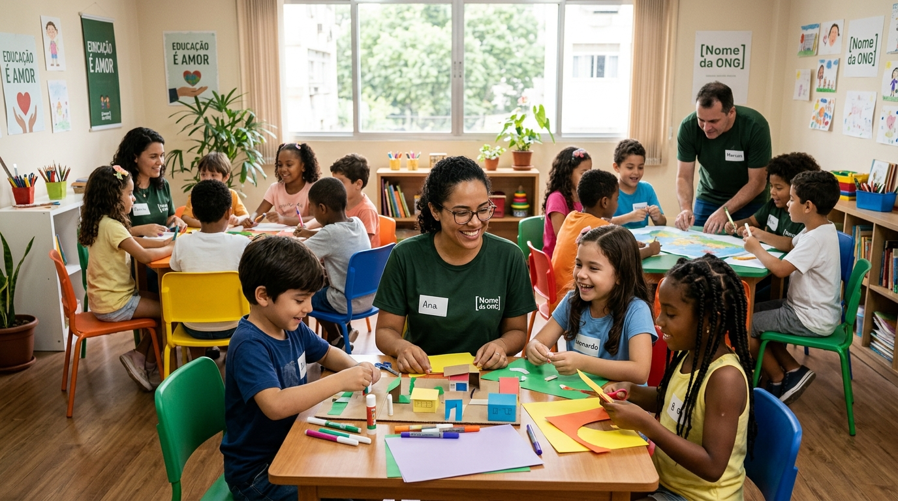
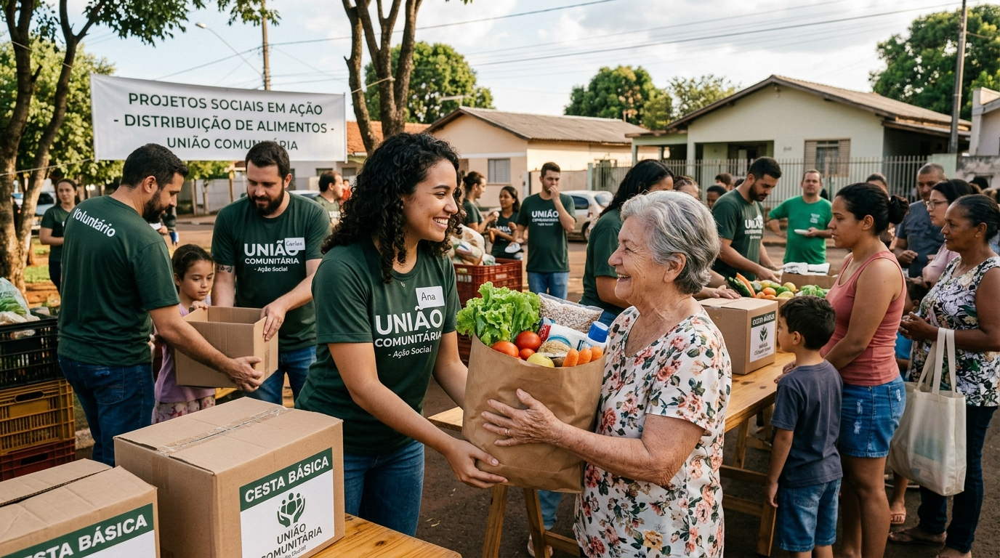
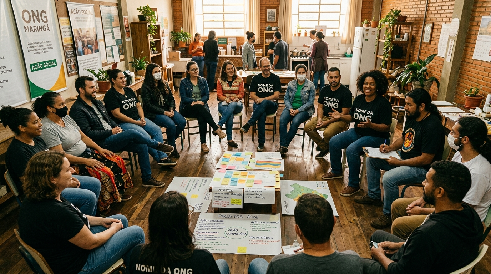

Projeto Um
Descrição do primeiro projeto, com público atendido, local de atuação e resultados esperados.

Conheça as frentes de atuação da [Nome da ONG], as oportunidades para voluntários e as formas de contribuir com a nossa causa.
Descrição do primeiro projeto, com público atendido, local de atuação e resultados esperados.

Descrição do segundo projeto, com público atendido, local de atuação e resultados esperados.

Descrição do terceiro projeto, com público atendido, local de atuação e resultados esperados.

Estamos com vagas abertas para pessoas que querem doar seu tempo e suas habilidades. Para participar, é preciso atender aos requisitos abaixo:
Faça seu cadastro e nossa equipe entrará em contato para combinar os próximos passos.
Quero ser VoluntárioToda contribuição fortalece os nossos projetos. Escolha a modalidade que melhor se encaixa para você.
Contribuição única, feita a qualquer momento e no valor que você escolher.
Chave Pix (CNPJ): 00.000.000/0001-00
Doar via PixContribuição mensal que garante a continuidade dos projetos ao longo do ano.
Ser Doador MensalSer voluntário mudou a forma como enxergo a minha comunidade. Cada encontro é um aprendizado.
Nome do Voluntário, voluntário desde 2024
O apoio da ONG fez diferença na rotina da minha família e abriu novas oportunidades para nós.
Nome do Beneficiário, participante do Projeto Um